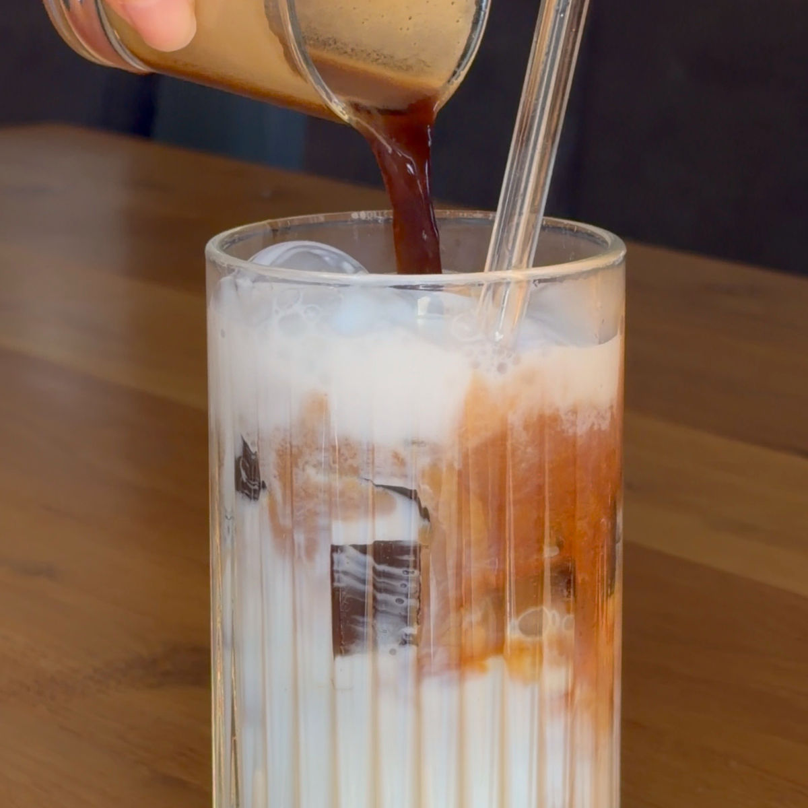
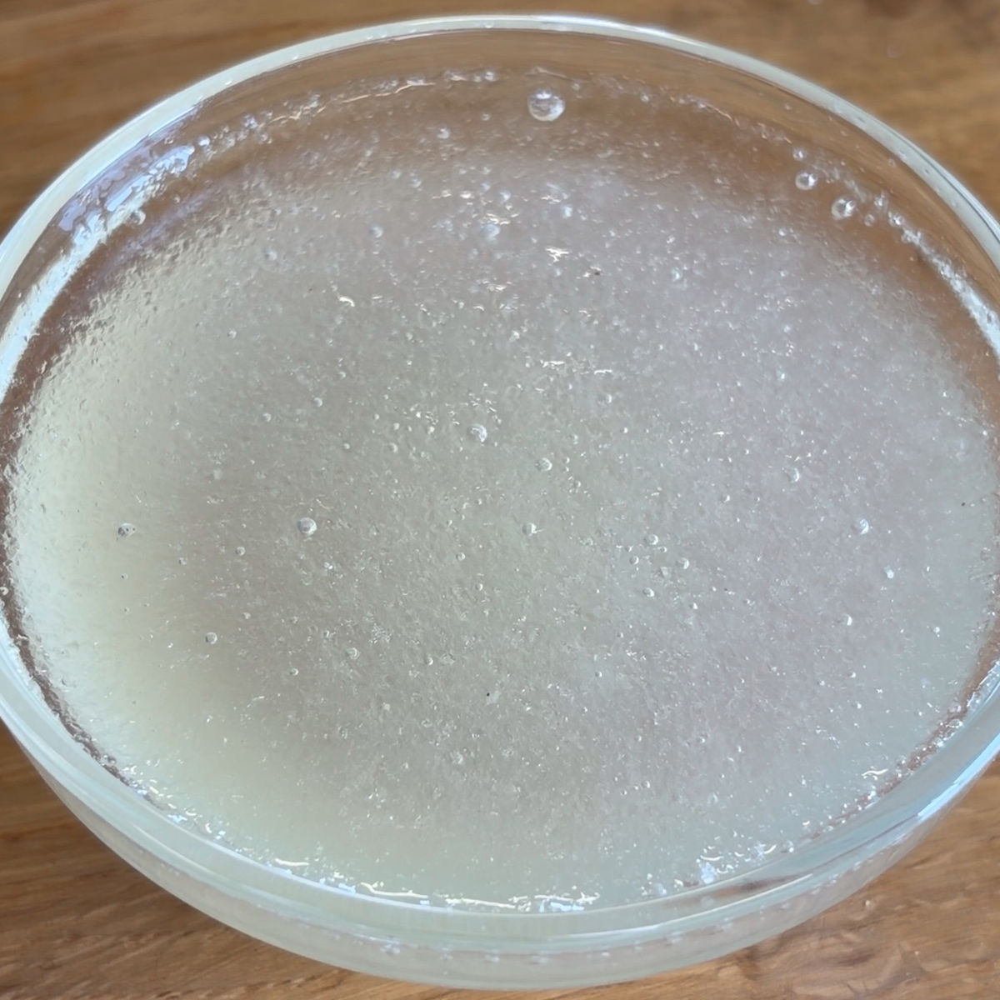
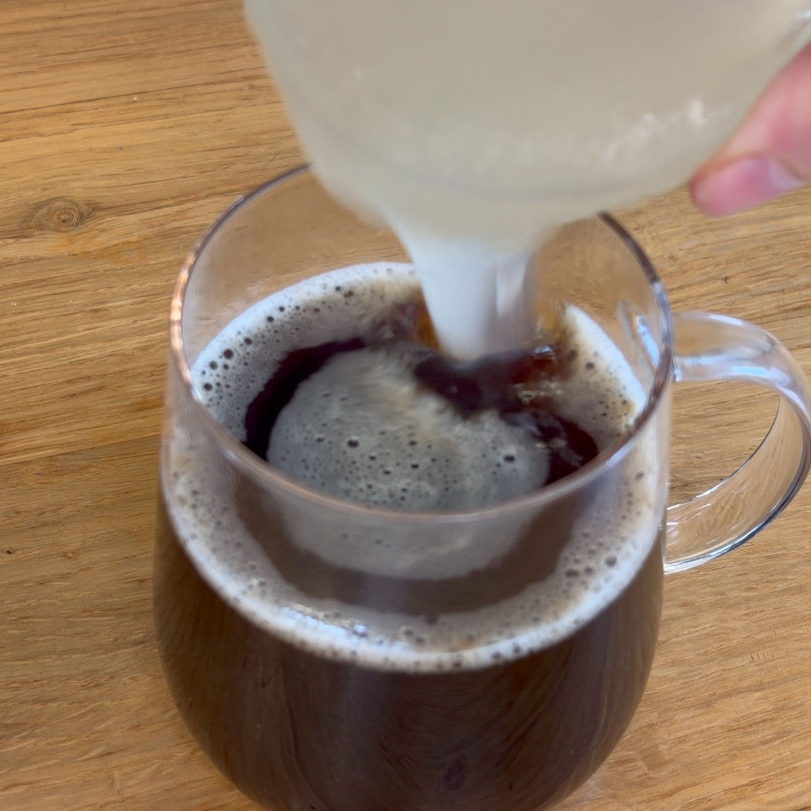
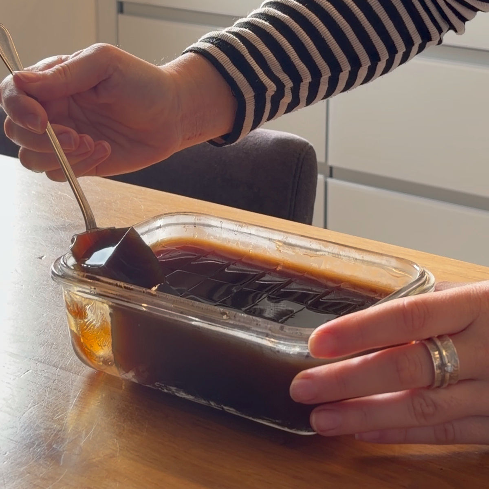
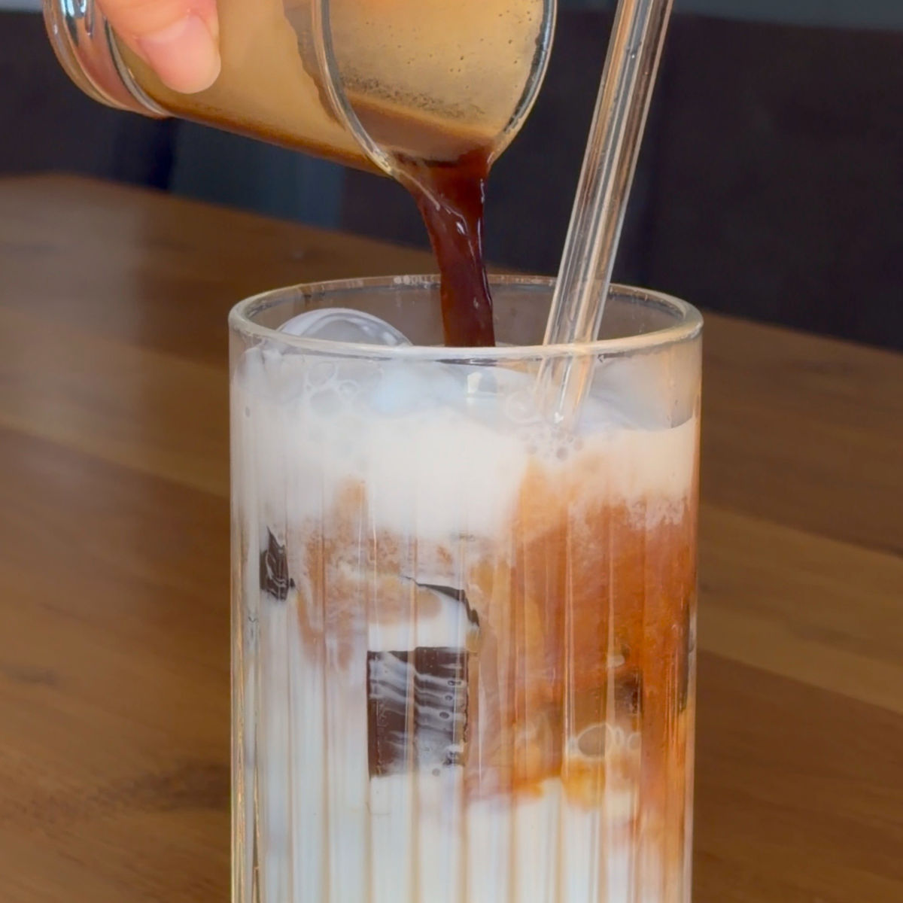

ג'לי קפה בריא
עודכן: 22 באפר׳
טבלת ערכים תזונתיים בקירוב:
| ערכים | 100 גרם |
|---|---|
| קלוריות | 0.8 |
| פחמימות | 0 |
| חלבונים | 0.2 |
את המתכון הזה פיתחה אחותי הקטנה עדן, היא אהבה את הרעיון שלי לג'לי פירות יער והחליטה לנסות אותו בגרסת הקפה. בסופו של דבר המתכון שלה יצא יותר טעים ומדויק מג'לי פירות היער שלי והוא זה שנכנס לעמוד. את המתכון הזה אהבתי במיוחד ואפשר לאכול את הג'לי קפה באמצעות הוספתו לקפה הקר שלכם. אני אוהבת לקחת כוס ולהכין בה את הג'לי קפה ולאחר שהוא מוכן לשפוך מעליו מעט חלב (יכול להיות גם חלב צמחי) עם מעט ממתיק.
התוצאה: קינוח מושלם קיל ובריא!
תוכלו לראות בכתבה הבאה שכתבתי:
מדוע ג'לי הוא בריא לנו

מתכון:
מרכיבים:
1 כף (15 מ"ל) קפה מגורען כמו Jacobs
1/2 1 (אחת וחצי) כוסות מים
1/2 2 (שתיים וחצי) כפיות ג'לטין שזה 12.5 מ"ל
1/2 (חצי) כוס מים
הוראות הכנה:
השרו את הג'לטין עם חצי כוס מים במשך כ-15 דקות.
בזמן הזה, ערבבו כף של קפה מגורען עם 1.5 כוסות של מים רותחים.
לאחר 15 הדקות, הוסיפו את תערובת הג'לטין לקפה.
שפכו את הקפה עם הג'לטין לכוסות זכוכית בהתאם לכמות הג'לי שתרצו במנה, ניתן גם לשפוך לתבנית, ממנה תחתכו את הג'לי לקוביות.
הכניסו ללילה במקרר.
הוציאו מהמקרר, אתם יכולים להוסיף לג'לי מעט חלב עם ממתיק ולאכול זאת כמו קינוח עם כפית או להוסיף לכוס קפה קר ולערבב את הג'לי בקפה, כך שיהיו חתיכות ג'לי מעורבבות במשקה. תהנו!
סרטון מתהליך ההכנה:
לינק לסרטון קצר
תמונות מתהליך ההכנה:

ג'לטין לאחר השרייה במים

העברת הג'לטין המושרה לכוס קפה חמה

חיתוך והוצאת הג'לי קפה לאחר לילה בקירור

הכנת משקה עם ג'לי קפה